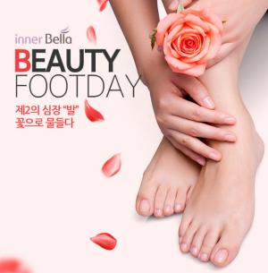
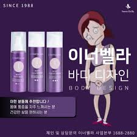

수십년 경력의 에스테틱 전문가와 함께하는 홈 에스테틱 케어 다양한 뷰티&헬스케어 프로그램을 전문가와 직접 상담하세요 피부관리, 건강관리, 홈 다이어트 등 혼자서 하기 힘든 어려운 에스테틱 케어에 고민하고 계신가요? 가까운 전문가를 통해 다양한 뷰티&헬스케어 방법을 상담하며 스스로, 또는 가족들과 함께 나를 가꾸는 시간을 가져보세요. 스파 이너벨라의 혁신적 홈 에스테틱 케어 솔루션은 당신을 아름답고 건강한 삶의 지름길로 안내합니다
스파 이너벨라는 최선의 해결책을 제시해 드릴 수 있습니다. 스파 이너벨라는 분야별 전문가들이 고객님들과 함께 심도 있는 상담을 진행하고 있으며 보다 이해하기 쉽도록 설명해드리고 있습니다.
감사합니다.